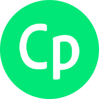
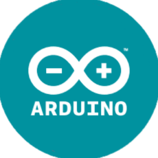
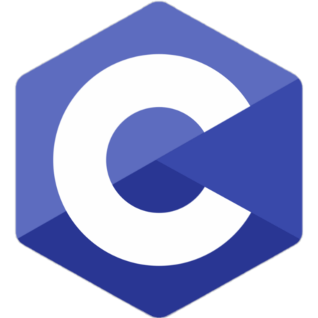
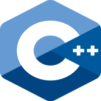

I'm Sayon
Engineering Graduate, Software Developer
I'm Sayon
Engineering Graduate, Software Developer
Projects
Board Game Simulator
Python Application
• A multiplayer board game simulator that utilizes an interface, built using front-end library wxPython, to provide a fluid user experience
• Board game rules and alerts are monitored during gameplay by executing code that has implemented back-end programming concepts such as data structures, graph theory, and game theory in Python utilizing a model view controller design pattern
• Games can be added in addition to Tic-Tac-Toe, Connect 4, Scrabble, Checkers, and Chess by using a 'Game Rules' library that was built from scratch
Secret Santa
Python Application
• Executes an algorithm developed in Python that generates random pairs of participants, with exclusions considered, that results in a continuous chain
• Utilizes Python libraries to implement a seeding method to re-simulate random generation
• Includes an email delivery system which accesses an SMTP server to automatically send emails to all participants
Panam Booking Bot
Python Application
• A bot built in Python using Selenium to automate account login and web parsing to automatically book session at the Toronto Panam Centre
• Emails results to account owners using Gmail emailing libraries in Python
Personal Website
Personal Website
Web Application
• A modern one page site constructed using Bootstrap, JavaScript, HTML, and CSS to achieve the desired aesthetic
• Includes scrolling and hovering animations to allow the viewer to navigate the page easily
• Allows support across various platforms, browsers, and devices
Spotlight
Web Application
• HackTO 2022 Project - A Job board for Immigrant Women
• Connects Immigrant Women, Employers, and Mentors
• Front-end designed using Figma and built using REACT
• Hosted on Springboot and AWS Cloud as a REST API
Buddi
Android Application
• A pet and owner matchmaking app built in conjuction with the City of Toronto's Animal Services
• Takes user provided information to match with and help get in contact with an adoptable pet
• Uses a Laravel-based REST API that the app can interact with through CRUD operations
• A web-app also allows users to login in on their desktop
Experience
Radio Frequency Engineer
MAY 2020 - AUGUST 2020 | Markham, ON

• Developed a desktop interface using wxPython which exponentially reduces the time taken to analyze the production data of radio frequency modules while also displaying graphs and creating a CSV file of the compiled data
• Constructed an interactive settings menu which allows engineers to seamlessly start testing for newly added modules by adjusting preferences for data input, analysis, and output
• Prepared and presented proposals to a team of engineers consisting of various disciplines which resulted in faster detection of production issues
• Tested PCBs using lab equipment such as oscilloscopes, spectrum analyzers, and network analyzers, while finding ways to improve test yield and test time
• Executed troubleshooting methods for prototype radio frequency modules such as soldering electrical components
• Prepared and presented proposals to a team of engineers consisting of various disciplines which resulted in faster detection of production issues
Electrical Rail and Transit Engineer
MAY 2019 - APRIL 2020 | Mississauga, ON

• Designed training modules using Adobe Captivate by conducting research and coordinating with a team of engineers
• Worked on AutoCAD detailed design, drafting, and calculation of safety analysis for the signal systems of various transportation agencies
• Actively engaged with various engineering teams to monitor blockers and track the approval and sign off of technical documents which promoted on time delivery
• Executed project management duties by retrieving and organizing useful data from databases and assisting team leads with the preparation of technical documents and presentation materials
• Provided testing support for commissioning of Canadian Air Transport Security Authority’s Smart Lane security systems
Electrical (Software) Team Member
SEPTEMBER 2017 - APRIL 2019 | Hamilton, ON
 
• Designed and implemented circuits used to activate solar cells to power a project car
• Designed a robust monitoring and display system using Arduino
Electrical Designer
JULY 2021 - FEBRUARY 2022 | Vancouver, BC
• Managed multiple projects from design to construction completion resulting in a 25% increase in total revenue
• Utilized strong interpersonal skills and the ability to work effectively with others to collaborate with owners, designers, and construction teams with the goal of achieving a vision of the design
• Applied a strong understanding of electrical building design to perform engineering design calculations and produce engineered drawings in AutoCAD
• Conducted site surveys, reviews, condition surveys and reports independently which eliminated the need for multiple engineers on smaller scale projects
• Engaged in personal and business development by proposing, implementing, and optimizing techniques to increase overall productivity
Product Engineer
MARCH 2022 - JUNE 2022 | Montreal, QC

• Designed, integrated, tested, and commissioned advanced control systems for electric utilities.
• Performed customer training and consulted on power system modeling to ensure the effective use and maintenance of a customer’s power system applications.
• Supported live customer systems using knowledge of power systems and OSI application functionality with clear, logical thought processes.
Software Developer
JUNE 2022 - PRESENT | Mississauga, ON
• Trained in the roles of Software Developer in Test (Selenium, SOAPUI, agile software development methodology, CICD) while working with 100+ other developers as part of the Infosys Validation Solution.
• Performed functional testing using Java and Selenium to validate 20+ modules such as login, adding/editing payee information on Infosys's Essence Bank application.
• Produced a data driven testing solution in automating tasks such as employee details generation (salary, asset date), validation and modification of user input received from employee info data which reduced labour time by over 50%.